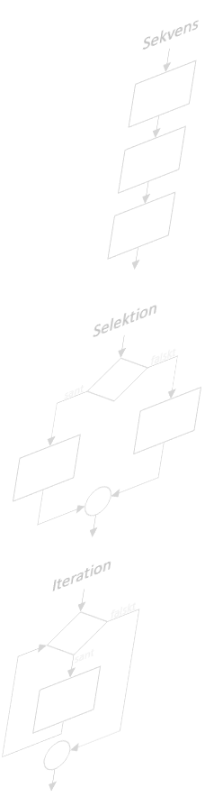

class: center, middle, lnu-background-yellow ### Grundläggande programmering (1DV021) # Föreläsning 2 <div class="lnu-footer"> <img src="../images/lnu_wordmark_kalmar_vaxjo_pahang_150mm150dpi.png"> <img src="../images/lnu_symbol_150mm150dpi.png"> </div> --- class: lnu-background-cc ### Upphovsrätt för detta verk Detta verk är framtaget av Mats Loock i anslutning till kursen Grundläggande programmering (1DV021) vid Linnéuniversitetet. Allt innehåll i detta verk förutom fotografier, ikoner, bild på kurslitteraturen samt Linnéuniversitetets logotyp och symbol, är licensierad under en <a rel="license" href="http://creativecommons.org/licenses/by/4.0/"> <img alt="Creative Commons-licens" style="border-width:0;vertical-align:middle" src="https://i.creativecommons.org/l/by/4.0/80x15.png" /> Creative Commons Erkännande 4.0 Internationell Licens </a>. #### Du får använda detta verk så här - kopiera hela eller delar av innehållet - sprida hela eller delar av innehållet - visa hela eller delar av innehållet offentligt och digitalt - konvertera innehållet till annat format - du får även göra om innehållet Om du förändrar innehållet så ta inte med fotografier, ikoner, bild på kurslitteraturen samt Linnéuniversitetets logotyp och symbol i din nya version! Vid all användning måste du ange källan: ”Linnéuniversitetet – Grundläggande programmering (1DV021)” och en länk till https://coursepress.lnu.se/kurs/grundlaggande-programmering och till Creative Common-licensen här ovan. --- <section> <h1>Kontrollstrukturer</h1> <div class="twocolumn"> <div> <p>Kontrollstrukturer är grundläggande verktyg vid programmering.</p> <ul> <li>Sekvens <ul> <li>En <strong>följd</strong> satser som måste utföras efter varandra.</li> </ul> </li> <li>Selektion <ul> <li>Ett sätt att <strong>välja</strong> mellan att exekvera olika satser.</li> <li><a href="https://developer.mozilla.org/en-US/docs/Web/JavaScript/Reference/Statements/if...else"><code class="javascript remark-inline-code">if</code></a>-satsen, <a href="https://developer.mozilla.org/en-US/docs/Web/JavaScript/Reference/Statements/switch"><code class="javascript remark-inline-code">switch</code></a>-satsen, <a href="https://developer.mozilla.org/en-US/docs/Web/JavaScript/Reference/Operators/Conditional_Operator">villkorsoperatorn (<code class="javascript remark-inline-code">?:</code>)</a></li> </ul> </li> <li>Iteration <ul> <li>Ett sätt att <strong>upprepa</strong> en sats ingen eller flera gånger.</li> <li><a href="https://developer.mozilla.org/en-US/docs/Web/JavaScript/Reference/Statements/while"><code class="javascript remark-inline-code">while</code></a>-satsen, <a href="https://developer.mozilla.org/en-US/docs/Web/JavaScript/Reference/Statements/do...while"><code class="javascript remark-inline-code">do...while</code></a>-satsen, <a href="https://developer.mozilla.org/en-US/docs/Web/JavaScript/Reference/Statements/for"><code class="javascript remark-inline-code">for</code></a>-satsen.</li> </ul> </li> <li>Rekursion <ul> <li>En funktion som anropar sig själv. <span class="text-gray">(Mer om detta längre fram i kursen.)</span></li> </ul> </li> </ul> </div> <div>  </div> </div> </section> ??? # Kontrollstrukturer Kontrollstrukturer är grundläggande verktyg vid programmering. - Sekvens - En __följd__ satser som måste utföras efter varandra. - Selektion - Ett sätt att __välja__ mellan att exekvera olika satser. - [`if`](https://developer.mozilla.org/en-US/docs/Web/JavaScript/Reference/Statements/if...else)-satsen, [`switch`](https://developer.mozilla.org/en-US/docs/Web/JavaScript/Reference/Statements/switch)-satsen, [villkorsoperatorn (`?:`)](https://developer.mozilla.org/en-US/docs/Web/JavaScript/Reference/Operators/Conditional_Operator) - Iteration - Ett sätt att __upprepa__ en sats ingen eller flera gånger. - [`while`](https://developer.mozilla.org/en-US/docs/Web/JavaScript/Reference/Statements/while)-satsen, [`do...while`](https://developer.mozilla.org/en-US/docs/Web/JavaScript/Reference/Statements/do...while)-satsen, [`for`](https://developer.mozilla.org/en-US/docs/Web/JavaScript/Reference/Statements/for)-satsen</a>. - Rekursion - En funktion som anropar sig själv. <span class="text-gray">(Mer om detta längre fram i kursen.)</span> --- # Sekvens - En __sekvens__ är en följd av instruktioner. ``` Instruktion 1 Instruktion 2 Instruktion 3 Instruktion 4 ``` - Den enklast möjliga kontrollstrukturen, men då en instruktion kan innehålla andra kontrollstrukturer kan det bli komplicerat. --- # Selektion - Enkelt val (`if`-satsen) ``` OM villkor uppfyllt Instruktion(er) ``` - Tvåvägsval (`if...else`-satsen) ``` OM villkor uppfyllt Alternativ 1 ANNARS Alternativ 2 ``` - Flervägsval (`if...else if...else`-satsen, `switch`-satsen) <div style="width:150%;margin-left:.9em;"> <pre style="float:left;width:30%;"><code class="javascript">OM villkor uppfyllt Alternativ 1 ANNARS OM villkor uppfyllt Alternativ 2 ANNARS OM villkor uppfyllt Alternativ 3 ANNARS Alternativ 4</code></pre> <pre style="float:left;width:30%;"><code class="javascript">VÄLJ fall ur Fall 1: Alternativ 1 Fall 2: Alternativ 2 . . . Annars: Alternativ n</code></pre> </div> --- # `if`-satsen ``` if (villkorsuttryck) { sats(er) // Omslut alltid satsen/satserna mellan klammerparenteser. } // (Behövs inte om det bara är en sats, men gör det alltid ändå.) ``` - Om villkorsuttrycket är `true` utförs en eller flera satser omslutna mellan klammerparenteserna, `if`-satsens kropp. - Villkorsuttrycket är ett uttryck som resulterar i något som Javascript betraktar som `true` eller `false`. ``` let number = 42 if (number === 0) { console.log('Talet är lika med 0.') } ``` --- # `if...else`-satsen ``` if (villkorsuttryck) { sats(er)1 } else { sats(er)2 } ``` - Endast ett av alternativen kommer att utföras. - Är villkorsuttrycket... - ...`true` utförs en eller flera satser som följer direkt efter villkorsuttrycket. - ...`false` utförs en eller flera satser som följer direkt efter `else`. ``` let number = 42 if (number % 2 === 0) { console.log('Talet är jämt.') } else { console.log('Talet är udda.') } ``` --- # `if...else if...else`-satsen ``` if (villkorsuttryck1) { sats(er)1 } else if (villkorsuttryck2) { sats(er)2 } else if (villkorsuttryck3) { sats(er)3 } else { sats(er)4 } ``` - Villkorsuttryckens värde bestäms till och med det första som blir `true`. - Avslutande `else` kan uteslutas. ``` let number = 42 if (number < 0) { console.log('Talet är mindre än 0.') } else if (number < 50) { console.log('Talet är större än 0 men mindre än 50.') } else { console.log('Talet är större än, eller lika med, 50.') } // OUTPUT: Talet är större än 0 men mindre än 50. ``` --- # `switch`-satsen ``` let number = 4 switch (number) { case 1: case 2: case 3: case 4: case 5: case 6: console.log('För litet!') break case 7: console.log('Rätt gissat') break case 8: case 9: case 10: console.log('För stort!') break default: console.log(number + ' är inte i det slutna intervallet mellan 1 och 10.') break } // OUTPUT: För litet! ``` --- # Villkorsoperatorn - En vanlig `if...else`-sats kan (ibland lämpligen) uttryckas... ``` let number = 42 let output = 'Talet är ' if (number % 2 === 0) { output += 'jämt.' } else { output += 'udda.' } console.log(output) // OUTPUT: Talet är jämt. ``` - ...med hjälp av villkorsoperatorn `?:`. ``` let number = 42 let output = 'Talet är ' output += number % 2 === 0 ? 'jämt.' : 'udda.' console.log(output) // OUTPUT: Talet är jämt. ``` --- # Iteration - Förtestad upprepning (`while`-satsen) - Loopen körs ingen, en eller flera gånger. ``` SÅ LÄNGE villkor uppfyllt Instruktion(er) ``` - Eftertestad upprepning (`do...while`-satsen) - Loopen körs minst en gång. ``` REPETERA Instruktion(er) SÅ LÄNGE villkor uppfyllt ``` - Bestämd upprepning (`for`-satsen) - Loopen körs ingen, en eller flera gånger. ``` initiera räknare SÅ LÄNGE räknarvillkor uppfyllt Instruktion(er) uppdatera räknare ``` --- # `while`-satsen</h2> ``` while (villkorsuttryck) { sats(er) // Omslut alltid satsen/satserna mellan klammerparenteser. } // (Behövs inte om det bara är en sats, men gör det alltid ändå.) ``` - Så länge som villkorsuttrycket utvärderas till `true` utförs satserna i loopens kropp. ``` let sum = 0 while (sum < 500) { sum = sum + 42 } console.log(sum) // OUTPUT: 504 ``` --- # `do...while`-satsen ``` do { sats(er) // Omslut alltid satsen/satserna mellan klammerparenteser. } while (villkorsuttryck) ``` - Så länge som villkorsuttrycket utvärderas till `true` fortsätter satserna i loopens kropp att upprepas. ``` let i = 10 do { console.log(i + ' ') i++ } while (i < 10) // OUTPUT: 10 ``` - I exemplet ovan utförs satserna i loopens kropp en gång trots att villkorsuttrycket är `false`. --- # `for`-satsen ``` for (initiering räknare; villkorsuttryck; uppdatering räknare) { sats(er) // Omslut alltid satsen/satserna mellan klammerparenteser. } ``` - En `for`-sats är ett annat sätt att uttrycka en `while`-sats. 1. initiering räknare. 2. villkorsuttryck 3. sats(er) 4. uppdatering räknare (gå till punkt 2) ``` let output = '' for (let i = 0; i < 10; i++) { output += i + ' ' } console.log(output) // OUTPUT: 0 1 2 3 4 5 6 7 8 9 ``` --- # Avbryta en loop - `break`-satsen avbryter en loop. ``` let output = '' for (let i = 0; i < 10; i++) { if (i === 4) { break } output += i + ' ' } console.log(output) // OUTPUT: 0 1 2 3 ``` --- # Gå till nästa iteration av en loop - `continue`-satsen avslutar aktuell iteration av loopen och påbörjar nästa iteration i loopen. ``` let output = '' for (let i = 0; i < 10; i++) { if (i % 3 === 0) { // 3, 6 och 9 jämt delbart med 3 continue } output += `${i} ` // en "template literal", // ger samma resultat som uttrycket output = i + ' ' } console.log(output) // OUTPUT: 1 2 4 5 7 8 ``` .gray-text[(Anses av vissa att vara "_bad practice_" att använda. Kod kan i regel skrivas så att `continue`-satsen inte behöver användas.)] --- # Kommentarer - Kod säger inte allt. För att beskriva vad kod gör kan __kommentarer__ användas. - Kommentarer är __VIKTIGT__ att skriva. - Ska stå på helt egna rader med en tomrad raden ovan i enlighet med kursens kodstandard. - Det finns olika typer av kommentarer. ``` let product = 1 // Radkommentarer går till slutet av raden. for (let i = 3; i < 100; i += 2) { product *= i } /* Blockkommentarer där allt mellan start och slut betraktas som en kommentar. */ console.log(product) /** * (Dokumentationskommentarer (JSDOC).) * Returns a string where all... * * @param {string} str The string being... * @returns {string} A new string with... */ let foo = function(data) { // do something with data to create some new data... return newData } ``` --- <img src="../images/lnu_symbol_150mm150dpi.png" alt="lnu-symbol" style="display: block;height:auto;width:40%;margin-left:auto;margin-right:auto">